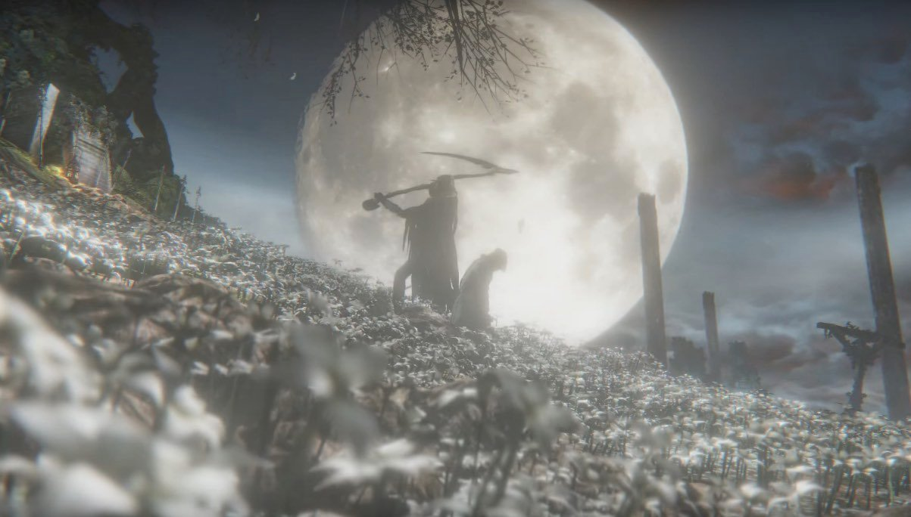
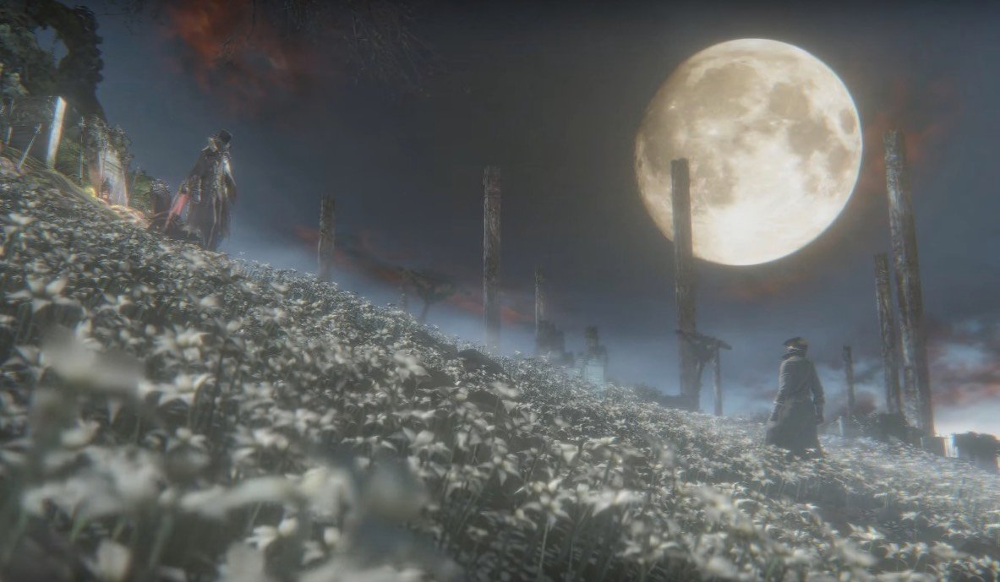
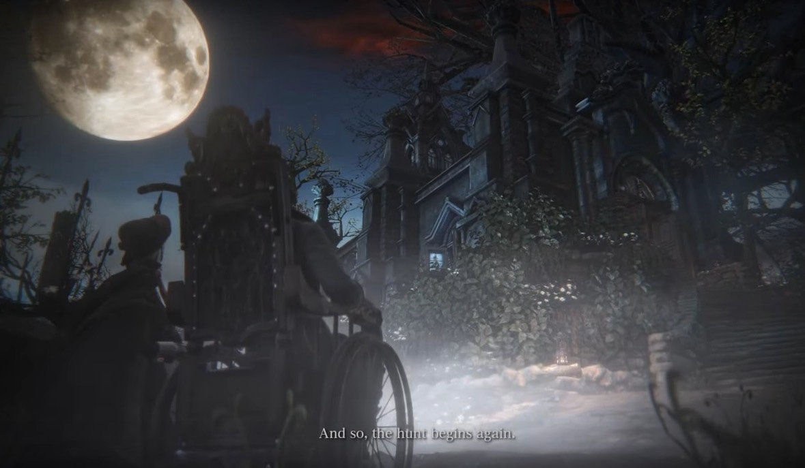
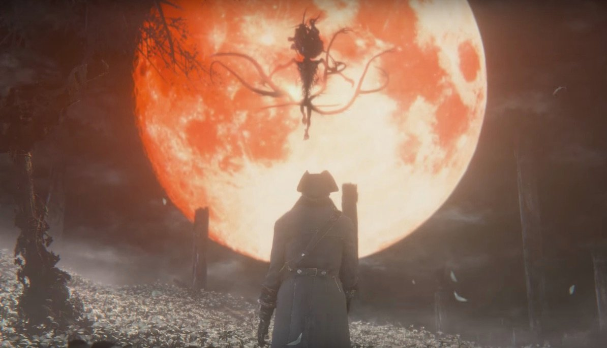
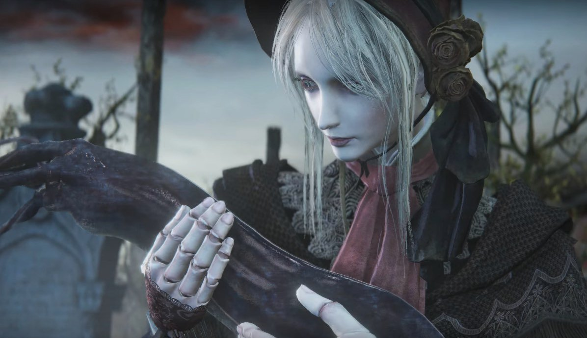
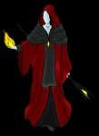

There are three (known) different endings available for Bloodborne. The endings will depend on whether or not you accept the decision given to you at the very ending of the game. Choosing Submit Your Life will unlock the first ending, while Refuse will unlock the other two endings, which will be chosen depending on whether certain criteria were met. It is worth noting that no matter which ending is chosen, you will be thrown directly into New Game + when the credits are over.
- If you wish to better understand the story, visit the Lore page or the dedicated Lore Subforums
Access to the End
After completing the Nightmare of Mensis. The player may travel back to the Hunter's Dream, and proceed to follow the path behind the tombstones, that are normally used to transport the player to various lamps around the game. Continue through the gate, and Gehrman, The First Hunter can be found at the top of this flowered hill, on the left.
SPOILER WARNING! This page contains spoilers for the end, or near-end, of the game. You have been warned.
Most of the information here is speculation, if you want detailed explanation of the lore in Bloodborne visit the lore section of the wiki.
Yharnam Sunrise:
How to get it:
The first ending in Bloodborne can be obtained by accepting Gehrman's offer.
When the player accepts/submits to Gehrman, he says "Farewell, my keen hunter. Fear the blood." With this, a cutscene ensues where the player is shown to turn around and kneel over. Gehrman stands up and puts his scythe to your neck, and with a swift cut decapitates the player. After a moment, the player is seen waking up with the sun having just risen and bells ringing in the distance. The Plain Doll is shown to be near what is most likely the player's grave, praying and saying "Farewell, good hunter. May you find your worth in the waking world." With this, the player obtains the "Yharnam Sunrise" trophy and the credits roll.

- Rewards: "Yharnam Sunrise" trophy
Possible Explanation:
This ending heavily points to the idea that the entire game of Bloodborne is nothing more than a dream. When the player accepts Gehrman's offer, the death is a sign of the player waking up from his or her dream.
However, which one is dream and which one is reality is still debatable:
1. The Hunter's Dream is no more than a dream, Gehrman is indeed freeing you from the dream, and the player awakes at reality.
2. This can also be the opposite, the sunrise is the player's dream, which means the Hunter's Dream is actually the reality, and "awakening" is equal to an eternal death. Gehrman's intent could actually be preventing the birth of the Great One.
Honoring Wishes:
How to get it:
The second ending in Bloodborne can be obtained by refusing Gehrman's offer. Once the offer has been refused, the player cannot later accept the offer: the first ending is locked off. This ending cannot be achieved if the player has consumed three or more One Third of Umbilical Cord items over the course of the game, as consuming these items triggers the third ending.
When the player refuses Gehrman, he says "Dear oh dear, what was it? The hunt, the blood, or the horrible dream?" After this he begins standing up, and afterwards says "Oh, it doesn't matter. It always comes down to the hunters' helper to clean up after these sorts of messes." He then pulls out a curved sword and attaches it to the long handle on his back, exclaiming "Tonight, Gerhrman joins the hunt..." With this, the player is thrown into a fight with Gehrman, The First Hunter.

If the player dies to Gehrman during the fight, he says "You must accept your death. Be freed from the night..." However, the game does not then end, and the player will respawn in the Hunter's Dream in front of the headstones. The field of flowers will be obscured by a boss fog gate. Gehrman will be hostile towards the player as soon as they re-enter the arena. The player must defeat Gehrman to end the game: they cannot change their mind about refusing Gehrman's offer.
When the player defeats Gehrman, he says "The night, and the dream, were long..." Upon his death, a cutscene ensues where the player is shown looking at the crimson moon with an ominous figure approaching. The player then slowly walks up to the figure, who then grabs the player and after a few seconds seems to incapacitate the player. After a blackout, the Plain Doll is shown pushing a wheelchair, and as the camera scrolls up the person in the wheelchair is revealed to be the player (as opposed to Gehrman). The Plain Doll kneels down beside the player and says "And so, the hunt begins again." A shot of the sky is shown wherein the moon has just risen. The player obtains the "Honoring Wishes" trophy and the credits roll.

- Rewards: "Honoring Wishes" trophy; First Hunter Badge
Possible Explanation:
The entity that grabs you may be what the nightmare itself stems from, and the player is shown to take the place of Gehrman as the new watcher of dreams.
Childhood's Beginning (Secret Ending):
How to get it:
The third and final ending in Bloodborne can be obtained by refusing Gehrman's offer with additional criteria being met. The additional requirements are simple: the player must use three One Third of Umbilical Cord. Although there are four possible cords for the player to get in a single run, only three must be consumed. (consuming them is the only condition. It does not matter where or when you consume them, as long as it is before Gehrman dies. This includes consuming them after losing to Gehrman, and even consuming them during the fight.) Consuming these items means the player can no longer achieve the Honoring Wishes ending.

This ending follows the same pattern as the second ending; however, once Gehrman is defeated, when the entity tries to grab the player a shining light appears and the entity is knocked back. The entity, now seemingly enraged, shakes its head and lets out a cry before challenging the player. This puts the player into a boss fight with Moon Presence. If the player dies to Moon Presence, they will respawn in front of the headstones in the Hunter's Dream, like with Gehrman. Once the player has defeated Moon Presence, rather than getting the usual PREY SLAUGHTERED message, they instead get a message saying NIGHTMARE SLAIN. After a moment, a cutscene is shown with the Plain Doll walking up to what appears to be a small slug-like creature whose colors and coat resembles that of the Moon Presence. The Plain Doll says "Are you cold...?" She then proceeds to pick up the slug and, after a small giggle, says "Oh, good hunter," with the cutscene ending and the player obtaining the "Childhood's Beginning" trophy.

- Rewards: "Childhood's Beginning" trophy; First Hunter Badge
It's worth noting that the trophy title is curiously similar to Arthur C. Clarke's book "Childhood's End", which suggests that human beings may one day evolve past the need for a physical body and become beings of pure mind.
Possible Explanation:
Now that the player has consumed a full umbilical cord, you essentially become a Great One, and so the Moon Presence can no longer do what it had initially planned to do to you and it becomes enraged and simply attacks the player.
Or as with ending the game with the fight against Gehrman, where the player takes his place as the "First hunter," the part where the doll picks up the slug and calls it ''good hunter'' may indicate that the player now assumed the role of the Moon Presence.
P.S. notes in Byrgenwerth have been found that read something like a child being born when a full blood moon hangs low. Later on, in Hypogean Gaol, a note reads "Nightmarish rituals crave a newborn. Find one, and silence its harrowing cry." It is possible that the umbilical cord belongs to the baby born under the full blood moon, however, it is unclear what the baby represents or who was the one that gave birth to it. It also seems to mean that the nightmare wants to kill you because after eating the umbilical cord it then thinks you're the infant and wants to kill you.
Echoes Trick
There's a way to acquire Gehrman's Blood Echoes, despite having triggered the third ending.
Simply shut down the application during The Moon Presence's Encounter Cinematic. After booting the game back up, you will have acquired Gehrman's Echoes.
This trick can also be used to escape the Honoring Wishes Ending, and trigger the Childhood's Beginning Ending instead.
After booting the game back up, you need to consume 3 One Third Umbilical Cords and reload the Hunter's Dream for the ending to change.
 Anonymous
AnonymousImagine if Bloodborne as similar NG+ like Dragon's Dogma, where the final boss is your character from previous playthrough. For those unaware, in Dragon's Dogma, the final boss is an 'arisen', or the title given to our player, and once we beat them we take their place. Once we initiated NG+ and got to the endgame, the final boss will be our character from the previous playthrough, complete with the armor and weapons we used.
Would make sense since on the Honoring Wishes ending we take Gehrman's place to become the watcher. I wouldn't even mind if on NG+ the watcher no longer has voicelines since they're now our player character. Though it would somewhat suck if we can no longer fight Gehrman, I think it's still quite an interesting NG+ gimmick to have considering the implications of each endings.
- Anonymous
I've looked around for a bit and haven't seen anyone else mention the parallel between the sunrise ending and spiritual awakening. There are many traditions that point to the necessity of surrendering the ego entirely in order to fully awaken to life as it is.
This is the only game that I've ever played where after living through a literal nightmare, you are offered the chance to let yourself die. (We don't talk about mass effect anymore, don't bring up starchild, I'll stab u). Sacrificing yourself for everyone to have a happy ending is cliche, but the hunter is offered the ability to sacrifice themself *for their own sake*. Surrendering the character we have created, that we have so painstakingly fought to build up and survive. Only by choosing to let the character die can we truly awaken to who we really are and be present for the light of the morning sun. (#praisethesun)
- Anonymous
When born as a cosmic being of pure mind, you can now dream a better dream. Instead of a Nightmare.
- Anonymous
- Anonymous
- Anonymous
Tentacle squid ending….tentacles…tentacle…the squid gets picked up by a cute doll girl….…if anime has taught me anything its that this wont end well…
- Anonymous
so can someone explain something to me?
when you get the bad ending you go to the city and the night is finally over
what happens when you die in the city without the dream? you just die forever or you wake up from the dream and awake in the actuall world? ( our world)
i am super confused
please help
- Anonymous
I always viewed the "Yharnam Sunrise" ending as the true ending, since it's the only one that The Doll refers to in NG+. It's also the only one that makes sense, if one views NG+ as canonical.
- Anonymous
Do y'all know if my horse will respawn? I accidentally killed mine and I'm pretty far from town.
- Anonymous
Here's a good Route tip before entering NG+ immediately after killing Moon Presence. ( In NG your 1st playthro , just initiate the Gerhman fight while you have consumed 3-4 Umbilical Cords prior )... Ok now Kill Gerhman , then you get a Cut-scene where u immediately start fighting Moon Presence , just Bold Hunter Mark within that Fight to warp out. ( This is still your Current NG progress yet even after Killing Gerhman , what i did is that i started doing all Chalices and actually Had Fun doing it ). While also doing the Chalices i managed to get almost all Trophies , and also got the Best Blood Gems that are Phys. ATK +21.8%.... And i also got Level Boosted before starting NG+ aswell ( I did mostly all Chalices , uptill Yharnam Queen for the Trophy & the "Yharnam Stone" drop ). What happend is that before killing Gerhman even before starting Chalice Dungeons , i faced Gerhman with my Hunter Level 88 ( And with this Method doing all Chalices actually Boosted me uptill Blood Level 160 or so ). So started NG+ with my Hunter level 160 , ontop of that many fully upgraded +10 weapons & the best Blood Gems aswell... NG+ is challenging but it was a piece of cake for me that i mostly 1 Shotted all Bosses lol. From all of this Method i have reached NG+4 now without even breaking a sweat & having alot of Fun ( Even Chalices with Cursed/Defiled are soo challenging but still manageable ). Hope this helps , And also i forgot to mention this ( In doing most Chalices , you got extra more Blood Stone Chunks & a Blood Rock aswell uptill Depth 5's all of that and also getting many Insights for getting extra materials or even getting another Blood Rock just as you start NG+ ). Very solid method , but it needs time & playing for awhile patiently as oppose to a Rush Speed Run playthrough or so.... This was also a perfect build for me that i managed to get Bloodborne Platinum Trophy in my NG+4 run too... Enjoy ;)
- Anonymous
I just realized that the player hunter is not really crippled in ending 2. The wheelchair is a symbol of the fact they can finally rest, but Gehrman stands up and fights properly, so I think we can assume the good hunter also keeps their physical capabilities.
I'm not sure if this reveals anything, but it kinda diminishes the impact of seeing your character in the chair.
- Anonymous
Anyone get the second ending in ng+ after earning both the 1st and 3rd ending?
In my opinion, I feel it's kinda BS to go immediately into NG+ just after defeating Gehrman or Moon Presence. I still want to co-op and stuff but oh well it's the game and I have to accept that
- Anonymous
The Pecularity! bit in the Possible Explanations part seems to be really stretching and is a pointless comparison that offers no explanation towards the ending
- Anonymous
The third ending is badass. I want to see the Hunter as a Great One and the Doll going around killing cosmic beings instead of beasts.
- Anonymous
- Anonymous
- Anonymous
So if you accept gehrman’s offer? You're gonna lose all of your progress?
- Anonymous
Becoming a great one is the good ending because the player is not originally a great one, so the player will not continue in the moon presence's path therefore everything will go back to normal, the moon presence's plans will be stopped, you have stopped the endless cycle of people being stuck in the dream and dying, and you are a good great one because you don't want anyone to go through this.
- Anonymous
Becoming a great one is the good ending because the player is not originally a great one, so the player will not continue in the moon presence's path therefore everything will go back to normal, the moon presence's plans will be stopped, you have stopped the endless cycle of people being stuck in the dream and dying, and you are a good great one because you don't want anyone to go through this.
- Anonymous
Becoming a great one is the good ending because the player is not originally a great one, so the player will not continue in the moon presence's path therefore everything will go back to normal, the moon presence's plans will be stopped, you have stopped the endless cycle of people being stuck in the dream and dying, and you are a good great one because you don't want anyone to go through this.
- Anonymous
Yharnam Sunrise will always be my favourite ending because it’s so different to traditional heroic endings. The hunter has seen some***** and after doing their part in the hunt they take Gehrman’s offer and leave it all behind. Sometimes you just need to know when enough is enough.
- Anonymous
tbh, im kinda hopeful with the final ending. lets say you keep your consious, why would you stop slaying nightmares/great ones? could you now battle them in their reality as a moon presence to attempt to break the cycle of being minuscule ants?
- Anonymous
So, there I am, going for the Yarhnam Sunrise Ending where I've given my character the Bordeaux Dress and Arianna's shoes only for me to look like I have no clothing and equipped the Beast's Embrace rune. Needless to say, I wasn't expecting that. Has anyone else encountered this?
- Anonymous
I can't comprehend how epic this story is. In the end a literal God descends into the dream. Thinking that we are a successor to Gehrman he grabs you and tries to turn you but then he discovers the truth: You are here to succeed Him. A fight breaks out, the monster is ferocious but not strong enough to best the Hunter. The great beast falls, the red moon is gone.. ..and a new Great One is born.
- Anonymous
In the end. Does it really matter which ending you choose? I mean: 1. If you allow Gehrman to kill you, the hunter is saved from the dream meanwhile the First Hunter remains still there. 2.If you kill Gehrman and then allow Moon Presence to turn you. You'll take Gehrman's place as a gatekeeper. 3.If you kill them both, you take controll over the dream. All in all, it is just a matter of perspective: Which choice would make YOU happy?
- Anonymous
- Anonymous
Is there a way to reverse the 3 One third umbilical cords and do the Honouring wishes ending instead?
- Anonymous
How I see it: - The blood ministration/beast plague phenomenon is somehow linked to the Great Ones and their method of reproduction (using humans to produce infant Great Ones). - However, though the beast plague is needed for the Great Ones, it is also a problem - the parasite needs to keep its host (the city of Yharnam) alive, or it can't use them anymore. - Therefore, the Great Ones created (or co-opted?) the hunters. The hunters mitigate the beast plague, so the city survives, and the Great Ones' reproduction cycle goes on. This is why the Moon Presence sustains the hunter's dream through Gehrman. - So the meaning of the ending(s) is that no matter what you do, you cannot defeat the Great Ones or break free of the cycle. If you defeat Gehrman, you take his place in the dream; if you defeat the Moon Presence, you take its place as a Great One. Whatever your choice, the dream, the hunt, and the parasitic reproduction of the Great Ones goes on. Even if you wake from the dream, the cycle goes on, and there's no guarantee that you won't be brought into it again on another night for a new hunt (this could be the meaning of NG+ in a meta way).
- Anonymous
- Anonymous
The way i see it. Ending 3 is where we become the new nightmare, the Doll is our wet nurse. A new hunter will end us and pick 1 of the 3 ending. On and on and on
- Anonymous
- Anonymous
Welp, I think the first ending’s the “good ending”. The nightmare’s over, life goes on.
If you take Gerhman’s place, you have to screw around in a wheelchair until the next poor sap saves teh world and (maybe) kills you so your nightmare ends.
Same situation if you become the next Moon Slug; pray someone kills you so you can wake up.
Or maybe the best ending is not starting the game so you don’t get trapped in the first place.
*thonking*
- Anonymous
Echoes trick.. "There's a way to acquire Gehrman's Blood Echoes, despite having triggered the third ending.
Simple shut down the application during The Moon Presence's Encounter Cinematic. After booting the game back up, you will have acquired Gehrman's Echoes"
Am i doing this wrong, has it been fixed or is it a load of poo?
- Anonymous
Is it just me or are all three “final” bosses disappointingly easy?
- Anonymous
Is the burial blade available after the Yharnam Sunrise ending? Or only when Gehrman is killed?
- Anonymous
I'm still trying to figure out why your in a wheelchair in the honoring wishes ending
If you aim the camera right, to can upskirt, or updress The Doll. Sadly, she's wearing shorts underneath... I don't see how this is possible because with The Dolls clothes on you aren't wearing any shorts.
- Anonymous
Is childhood's beginning possibly a reference to Arthur C. Clarke's childhood's end? Both seem to deal with the same topics of human ascension/evolution through assistance of already superior beings and we know that bloodborne is largely influenced by other 20th century novels (Lovecraft).
- Anonymous
- Anonymous
I got the hunter badge when gehrman died then fight moon persences when I ate the 3 umbilical cord s david
- Anonymous
It isn't necessarilly "grab and incapicitate" as it is "hug". I think you misinterpreted the ending, as the achievement does imply a more warm manner to the ending since the achievement says "captivated by the moon".
Also I think it has something to do with how the Elder Gods lost their child
I feel bad for the person who can't spell "greasy" properly
- Anonymous
Would it be canon if the people who died during the hunt "woke up?"
(I ask this because of Gascoigne's daughter ;_; )
- Anonymous
The Trophy descriptions actually confirm some of these insinuations, especially "Childhood's Beginning," while also offering some extra insights.
Yharnam Sunrise: "You lived through the hunt, and saw another day." Though the hunt will continue another night, you've maintained your sanity and resisted the temptation of the old blood. In the future, either you or another unfortunate individual will be subjected to the dream once again in another one of the Healing Church's sessions of blood treatment.
Honoring Wishes: "Captivated by the Moon Presence, you pledge to watch over the hunter's dream." Enamored in the sight of the obscure Great One that commands the hunters, you remove the tormented memory of Gehrman, or perhaps more accurately his ghost from the dream, and take his place as the hunter's guide. Your physical form is likely lost to you, but your consciousness survives in the dreams of future hunters, in order to protect the Moon Presence and the delicate secrets of the esoteric Eldritch Truth.
Childhood's Beginning: "You became an infant Great One, lifting humanity into its next childhood." By killing the Moon Presence, you have removed the hunters and effectively taken its place as the ruler of the hunter's dream--essentially becoming the next Moon Presence. Alone in this realm, your incomprehensible consciousness will serve as a testament to the healing power of the blood, and it's possible that the hunt has finally fulfilled its loftiest goal. Perhaps your body and blood in the physical world will be harvested to heal the city, possibly even to enlighten all mankind and to save the world from purposelessness (it's evident that whatever blood you've been subjected to induces powerful hallucinations and fever dreams, which the Healing Church believe to be transcendental spiritual journeys). Basically you become Squidsus Christ.
That, or nothing happens and everyone forgets who the hell you were and nothing changes and the Trophy is just lying to you.
- Anonymous
If you submit your life, can you get the burial blade in ng+? Trying to 100% the game and kill two birds with one stone
- Anonymous
I missed the good ending. How am I supposed to know to EAT a bunch of umbilical cords (eww)? I avoided reading the "Spoilers", because, you know, they're spoilers, and now I've screwed up the ending. There are plenty of things you can be cryptic about, game makers, but not things this big.
- Anonymous
As long as I get to stay with the Doll, I consider that a good ending.
- Anonymous
- Anonymous
Why does BloodBorne has so many stuff related to Japanese slimely creatures? Like squids, octopuses and slugs does BB have dirty jokes or do they support octopus porn?
- Anonymous
>what appears to be a small slug-like creature whose colors and coat resembles that of the Moon Presence.
Sure, but the slug is blue and the moon presence has red all over it..
> "Nightmarish rituals crave a newborn. Find one, and silence its harrowing cry." It is possible that the umbilical cord belongs to the baby born under the full blood moon, however it is unclear what the baby represents or who was the one that gave birth to it. It also seems to mean that the nightmare wants to kill you because after eating the umbilical cord it then thinks you're the infant and wants to kill you.
And this is just nonsense. Silencing the harrowing cry of a newborn born of a nightmare? Hello? Remember Mergo's Wet Nurse, who was fought inside a "Nightmare"? The only part that makes sense there, is that the player is reborn as a great one.
- Anonymous
"Peculiarity! This dark slug appeared before in DS1 . It can be found in front of Lord's Blade Ciaran when she prays for Artorias."
Err... That's artorias helmet plume....
- Anonymous
cheater_1 says:
PATHETIC endings...all of them. It's as IF the devs couldn't make the deadline and just THREW something together. LAZY. From Software devs ARE a bunch of hacks.
- Anonymous
I find it enjoyable to kill gehrman and then leave so I can just look at the moon presence chilling in my backyard
- Anonymous
It's basically a game where everyone who is powerful enough is trying to *ascend* which means being reborn as a true great one. The one's deem worthy are obviously those who didn't went mad or turned into beasts after finding the whole truth.
- Anonymous
Very similar to dark souls. But in this game ending the cycle means becoming a true great one. The Doll was also a cosmic being.
- Anonymous
The man at the beginning of the game is the Blood Minister, creator of blood vials
- Anonymous
Thats not the dark slug ciarian is praying too, it's artorias's fabulous ponytail
- Anonymous
Quick question, once I use the umbilical cords for the final boss, do I have to kill both bosses in one go to get the true ending? If I die to the boss after using the cords is it all over?
- Anonymous
in the ending when the doll said *oh good hunter* ... to me it seems like there's a true meaning to what the doll said ...! and i think she meant is oh good hunter you did it you beat moon presence ... or something like oh good hunter you did it again ... sorry if im wrong
- Anonymous
At the very start of the game there is some man looking over you and says that the transfusion is complete or something? Who is this man? It is not Gehrman as far as I can tell because it looks different then him, or maybe it is Gehrman outside of the dream and in actual reality.
- Anonymous
That's what I'm not understanding here, why would the Moon Presence create the dream and try to induct all these hunters like Eileen and possibly Djura.
- Anonymous
The trophy details, "You became an infant Great One, lifting humanity into its next childhood." So I am think that little 'cold' slug the doll pickup was... ME!!! Eeewww
- Anonymous
After the fight with Gehrman to me it looks like Moon Presence is kinda like smelling you or something and gets angry when it realizes that you have killed all 3 child they where trying to bring into to world.
- Anonymous
The third ending can't be called "True" ending only for be the most harder to achieve, in my opinion, no one can't know what ending is the true, maybe the creator let the player choose what ending like to be "the true ending"
- Anonymous
I don't see it noted in the Theories themselves but I think it's worth pointing out that since this game obviously took a LOT of inspiration from Lovecraft, that the Dreams are likely meant to achieve a state closer to the Great Old Ones, those the people of Yharnam see as gods, or as the case may be a state created by a Great Old One to pull a surrogate closer to itself- this seems likely with Gherman as he seems bound to the Dream by the Moon Presence in a more permanent fashion than the Hunter. This would mean it is not a typical "it was all a Dream" trope, but rather that people are literally using their dreams to bridge the gap between they and their gods. Micolash in particular embodies this theory, especially with his fear of waking up and forgetting what he learned in the dream. Patches too, seems to be traversing Dreams in order to worship what he deems to be his god. This would mean that everything is happening in the game's reality, barring certain Great Old Ones that only seem reach-able in dreams, perhaps suggesting that in reality they are rather on the Moon (I'm suggesting this because of how the moon changes over the course of the night and the key role it plays when it takes on its Paleblood color, not unlike the Lunar Cry event of Final Fantasy VIII which itself has similar thematic undertones to Bloodborne's Paleblood moon, seen most clearly in the cutscene when first walking into The One Reborn's boss fight).
- Anonymous
I'm thinking that maybe the Doll is in someway connected to the Moon Presence. I just got to wondering where all of them "blood echoes" (they are souls, I don't care what anyone says) go once we give them to the Doll. I'm thinking she might be a battery or a conduit of some kind that the Moon Presence then "feeds" on.
Here is my point of view on all three endings. Keep in mind that this is an answer I made in another discussion a while ago, so it might be similar to what is written above, I just wanted to share what I understood : Without spoiling, I don't think you can rate the endings, but I'll try. So everybody here is aware of From way to tell story, there always is a cycle. Here, we hunt, we die, we awake, and repeat. When accepting Gerhman's offer [SPOIL], you accept to end the cycle and awake in the real world, by dieing in the dream [/SPOIL]. So basically this is the "end of cycle" ending that we could rate as happy ending. The second one, refusing the offer [SPOIL] you refuse to end the cycle for some reason and face Gerhman. As you kill the first hunter and creator of the dream, you call the moon presence in the dream. I assume the moon presence represents the state of mind of a hunter when facing the moon in Bloodborne. It recognizes you as the new first hunter and you are forced to take Gerhman's place by ruling the dream and guiding hunters [/SPOIL]. To me this a bad ending. It is the "cycle continues" ending and as in other Souls game, it is pointless as a hunter will one day end the cycle in one way or another and you are forced to wait for that hunter to end your cycle [SPOIL] by killing you when you had the choice to give your life to Gerhman [/SPOIL]. The "true ending" [SPOIL] By consuming the full umbilical cord, you basically became a Great One. When you killed Gerhman and made the Moon Presence appear, it recognizes you as a Great One. As I believe that Great Ones are a menace for the dream and for the moon (just realized I was wrong, the Moon presence attacks you because you refuse to become its child, not because it is agressive towards great ones as it IS a great one), it becomes agressive towards you. But as you kill it, you realize it was pointless since all children of great ones die when they come to life, before being replaced by a creature of the moon. Therefore your character dies, before being reborned as a disgusting little worm. I do believe this means that you basically took the Moon Presence place and therefore, the cycle keeps going until another hunter defeats you [/SPOIL]. To me this is a neutral ending, even though it feels not right and kinda sad. I just wanted to add that the doll has a HUGE importance in all 3 endings, which makes me think that there is more to discover behind this character. Feel free to correct me if I am wrong, this is just my humble opinion ! PS/EDIT : According to this page theory and other in game clues, Paleblood are beings that do not have blood echoes, but are able to gather them through blood transfusion. The doll's blood is white. Just sayin. We might be seeking something that we had right in front of us...
- Anonymous
So, I went threw, read all the Lore I could, and got the endings, this is my read on the game. The game, for the most part seems to be a Dream though the context of that dream changes where you are. Each zone of Yharham is a part of the human sub-conscious. The start is the hunters mind clinging to what he or she remembers as reality - Cainhurst is a feeling of Isolation and fear as it is completely disconnected from everything, Nightmare is all of the hunters fears given form, as well as the creation of Miko. Miko himself is the equivalent to The First Hunter, but he's twisted and broken. As such his ""Hunters Dream" became twisted and broken itself. It is said that all the Great Ones have Stillborn within the storys lore. Margo is a Wet Nurse, Wet Nurses those who tend a child in the place of a mother, as such the legitimate opposite of a Stilborn. Upon killing Margo the hunter is greeted with the "Nightmare Slain" perhaps this is a message that the existence of Nightmare caused that cycle of the hunts, as it's stated multiple times that Yahrnam has had multiple hunts but this one was unusually long. Also mother brain is theorized to be a Mistaken Great One, a possibility there is that Mikolash lost to Gehmen but didn't "Wake Up" because he consumed the 3 umbilical Cords, as such he had the power of a great one, but couldn't defeat The First Hunter, and instead created Nightmare which caused The Hunts to go sour. Mikolash may have originally been Gehmens apprentice, the owner of the bone as finding The Abandoned Workshop nets you a trophy claiming it was where "The Dream Began". This could then be taken even further, and Ludwig could be Moon Presence. Regardless the creation of the Dream/Nightmare one thing is indefinate, the Hunts were, at least at first Benign, not effecting the dreaming or waking world, but eventually something happened, and The Moon Presence was born, but the Hunts remained the same, until the timeline hit where Bloodborn takes place, at which point the Hunt lasted longer, and the effects were a lot more harsh to the waking world. I want to add one last note, something I don't think few have noticed. After each boss the world changes, except 3 locations - note I said 3 not 2. Those 3 are The Hunters Dream, The Nightmare/Lecture Hall, and finally The Abandoned Workshop. Not only that, at the games start the sky is an eerie purple, the moon is normal, yet upon entering The Abandoned Workshop, the sky is normal, hazy but normal, and the moon is a pale yellow.
- Anonymous
Given the presence of others aware of the dream, and the fact that the doll mentions this isn't the first hunt, I've taken the Hunter's Dream to be both reality and a dream. The dream infringes on reality when the protagonist gains insight into an event, shaping reality to match the events of the dream. When the protagonist gains no insight, their awareness within the dream isn't enough to effect reality. When Gehrman kills the protagonist, the events within the dream are still real, the hunt ended as it has in the past. The protagonist remains changed by what transpired in the Hunter's Dream, but without the link to the Great One that the dream provided can no longer gain strength through the blood (or at least not without some other psychic connection to a Great One). The Guardian Hunter is tasked with ensuring a successful hunt while making sure that the insight gained by the Hunters does not endanger the world (and perhaps, unknown to the Guardian Hunter, the Great One who fuels the dream).
- Anonymous
In this ending we become what ??? was for the pthumerans. They ascended to their current form via some sort of help from the great ones. In the lecture building there is a note which says: evolution without courage will be the downfall of our race. And the trophy description says: you became an infant great one, lifting humanity into it's next childhood. Meaning to a new step in evolution. And guide them as a god (I'd think) The first one seems selfish, but reasonable: be free from the horrors of this night, and live a normal life, unaware of past events. The second one is kinda nice, I guess: freeing Gherman and taking his place as a guide of sorts for future hunters (since the cycle isn't broken this way) But really, the third is the only one that impacts the whole world on a significant level.
well they are theories. honestly it should just be listing the endings on this page and not trying to explain them with opinions.
- Anonymous
My opinion on the 3rd ending is that the Hunter is a slug-like entity in the first place. It (the baby slug) were placed in a corpse of a human by the old man (surgeon) who awakened as a Hunter. There's a voice who I assume the voice came from the Doll who says: 'You have found yourself a hunter.' Note that the old man said once the 'Hunter' awakes it will all just be a bad dream. Once in the dream, the Hunter came across and consumes 3 umbilical cord(s) which might be a metaphor of itself and therefore awakens to the truth and it's true form as implied in the 3rd ending. The purpose of the story might just be an experiment created by the mad scientist to use the slug as a way to gather insight in order to uncover the truth of their world. Maybe (my own humble opinion) is that they (the mad men) plan to ingest the slug after the experiment succeed.
- Anonymous
What about when Gerhman says : "Oh, it doesn't matter. It always comes down to the hunters' helper to clean up after these sorts of messes.". Who is the hunter then? Or this implies on the player itself? As he did help us.
- Anonymous
Ok so here is from my opinion which i don't know whether it is correct to not. Correct me if i wrong. Ok so I believe the Gehrman was the first and only watcher of dream as it is stated there the first hunter. Not only that but former hunters like Eileen and Gyula died permanently because of their link to the hunter's dream has been severed. maybe Gehrman does not want any hunters to suffer the same fate as him as he is seen to show signs of depression or maybe he is doing his job when he rises up from his wheel chair and to defend his position if you refuse. Now for the link between the moon presence and Gehrman. If you don't consume three umbilical cords and kill Gehrman the moon presence choose you as the next keeper of dreams. I don't know why but maybe a dogma has been set there and when the moon presence chooses you as the next keeper of dreams the plain doll says " and so the hunt begins again" and the house is normal (the house was on fire before you meet with Gehrman for the ending) with you as the 2nd keeper of dreams and to do what Gehrman do that is to execute new hunters that have completed their nightly hunt and to defend your position as the keeper of dreams from new hunters that refuses. If you consume three umbilical cords and kill Gehrman. The moon presence try to make you the new keeper of dreams but instead it can’t make you as you are able to resist it. The moon presence then attack you but instead it is slain. Right after that a cutscene appears and the plain doll says “Oh, good hunter” and the slug is you (if you don’t believe me then check your trophy). I don’t know why the moon presence have to exist but i’m going to need some explanation from that. If you submit your life in Gehrman you wake up from the hunter’s dream and find yourself in Yharnam meaning that you have become like Gyula and Eileen being free from the hunter’s dream and have a chance to live your life out as much as you want but when you die, you do not end up in the dream. Not only that but In the hunter's dream you can see a number of tombstones and when you submit your life to Gehrman, a tombstone spawns in the NG+ and (maybe not confirmed) the plain doll moves there as remembrance of the hunter(you) whose link is severed to the dream. If i have left out anything missing please tell me.
- Anonymous
i've a few theoreis about the moon, i will start by saying that in my opinion there is no difference between the moon and the moon presence, they are one beeing, one great one haha, and in my opinion, the yharnam blood too is part of this giant (main) grat one. I thing that the fact that the moon and the blood have some connection is unequivocal, for one simple reason, during the fight with moon presence it use an attack that make you unable to use healing blood, this attack consist in a ball of blood that starting from the ground rise than explode in a blood shower, so it's clear that the moon can control the blood in some way. (sorry for my bad english)
- Anonymous
- Anonymous
At the beginning you are given yharnam blood to connect you to the dream to be sustained and the doll doesn't appear alive unless you have atleast one insight. The School of Mensis conceived the Nightmare the same way Gehrman and Laurence conceived the Dream, However the Mother Brain of the Nightmare was malicious and rotted, where as the moon presence was sympathetic in nature and sustains the hunters. Even though both events causes catastrophic recoil. The Nightmare is the source of the beasts, by ending it you complete your duty, and Gehrman gives you option to leave the dream. Djura and Eileen were both of no use to Gehrman or the hunt we were released from the dream as a result, which is why they "do not dream" anymore. Djura gave up his hunters oath and Eileen only seeks to enforce it is kept but doesn't hunt beasts herself. I suspect Gehrman wishes to confront the Moon presence himself for whatever result; when you submit your life and awaken, you are no longer sustained by the dream and will live and die normally, even if the hunt begins again. You're now just a nobody who outlived their usefulness and you forget everything as micolash did. The game teeters on a balance of Frenzy and Beasthood, Insight make you less of a beast (or beastly idiocy, as micolash puts it.) however the more insight leaves you susceptible to Frenzy or still-birthing your brain as it did for Mensis. Eating the Cords gives you sight beyond sight and lets you match the greatness of the Great Ones. One of the Cords conceived the Hunters Dream and is linked to it, One conceived the Nightmare and is linked to it, and the other two are fresh off the barbie. Both you and Gehrman cannot match greatness with the moon presence without the cords, and thus you cannot undo it's conception of the dream. Upon consuming the cords, you pretty much reap the entire reward of the Nightmare and the Dream without having to pay the penalties as the Mensis and Past Hunters. You gain the insight to overthrow the moon presence. The game never indicates you REPLACE or BECOME the moon presence, you simply defeat it and become the new heir of its power. You transcend to a great one and the hunt is now yours to do with what you see fit. It is also implied many times that the Nightmare and Dream are alternate realities of their own, and not -just- a manifestation of mind, as both the Great Ones and the Messengers call it home. You are now home good hunter.
- Anonymous
That's disgusting to hear about "eating" a baby's umbilical cord and this game gave a mysterious plot line to know.
- Anonymous
The clue to this is honestly in the trophy desciprtions First ending, you wake up, the hunt is over and you carry on and when the next hunt comes you are just a civilian waiting to either die, transform or until someone beats the hunt. Second: the hunt continues but you are the keeper of the dream, guiding the others PROTECTING the moon presence. Third: You have transformed to the next evolution of the human race, as a great one you will be a god and guide the rest of the civilization to its next age. It's all in the descriptions :)
- Anonymous
- Anonymous
I don't know if anyone else has mentioned this, but umbilical cord blood is often harvested as a great source of stem-cells. Stem cells have the ability to renew themselves and become any type of cell in the body. Cord blood stem cells are especially good at becoming new blood cells...
- Anonymous
They told me I could be anything I wanted... So I became the moons presence
- Anonymous
Really, I only like the 'Yharnam Sunrise' ending. For me, it had two of the most iconic scenes I've seen in a game in recent memory: Gehrman and your hunter standing before the moon as you submit your life and the sun rising over Yharnam. The 'Honoring Wishes' ending is unfulfilling but that's alright since it does more or less seem to be the bad ending. The 'Childhood's Beginning' ending on the other hand has to be one of my least favourite endings in video games assuming that you have become the new Moon Presence. I know souls games tend to have unsatisfying endings but this is just my opinion. Again, I actually really liked the first ending though I found Mergo's Wet Nurse to be a pretty terrible final boss in this case though I have nothing against the fight. I find that the first ending also brings up an interesting thought too: Are dreams just other realms of existence? Are they ones that don't abide by the laws of our world? Or are they truly just illusions of the mind? What do the rest of you think? I'm curious.
- Anonymous
You're a man now, you're a squid now You're a man now, you're a squid now You're a man now, you're a squid now You're a man now, you're a squid now You're a man now, you're a squid now
- Anonymous
The Yharnam Sunrise ending is the happiest ending I guess because you(Hunter) get free from the whole nightmare and live a normal life as my point of view
- Anonymous
It could be the baby's cry you silence is actually Arianna's child. after all you get something out of it, if not just the guilt alone. of course it could also be mergo who's cry is silenced after the one boss fight.
- Anonymous
If you watch the ending you can see he would have only hit you with the blunt of the handle not the blade of the Burial Blade. Your head should still be attached even though your neck would be broken. "swift cut" my ass...
- Anonymous
I really want to play this game, the gameplay and everything seem a lot stronger all around than Dark Souls.
- lordnoah
- Anonymous
i think in the third ending the alien slug that doll picked up was the hunter itself transformed into the a Great One baby. you became such because you consumed the umbilical cords thus becoming the surrogate and killing moon essence sealed your fate.
- Anonymous
I have an observation. In the Yharnam Sunrise ending the player "awakes" in the Cathedral Ward courtyard in front of a well but in the actual place there is no well. And we are facing the Upper Cathedral Ward. Could this have a meaning or is it for the sake of the ending cutscene ?
- Anonymous
Bloodborne have to me clear influences from Lovecraft works, specially Call of Cthulhu and related stories. The final secret ending specially, to me makes it clear and I am really glad for having played it. Hopefully the future DLC will add something more to the story. I liked the Sunrise ending best but the secret ending is far more complete.
- Anonymous
I keep wondering about 2 things mainly: What does a "normal" hunt without a Micolash fueled nightmare look like? When does a normal hunt begin and how is it ended? At what point does Gehrmann normally offer to kill a hunter in the dream and let them awaken? What is it that triggers a normal hunt? When a Great One decides to in some way interfere with humans, causing the moon to come closer and thus starts turning people into beasts? Second thing I keep thinking about that is Ebrietas. My impression (after 5 playthroughs) is that she seems to be the only "good" great one, in the sense that she doesn't seem intent on creating any dreams (or nightmares. I really don't think that there's a difference between a nightmare and a dream in Bloodborne, they both seem to be ultimately bad for the humans). She also seems intent on teaching humans and perhaps she willingly is the one who keeps providing the healing church with her blood. A fun speculation that I'd like to hear peoples' thoughts about. So it's mentioned that choir members were people in the healing church with stong capabilities of contacting the great ones. One thought that occured to me is that maybe they eventually developed a method of contacting the great ones and using arcane magic through their singing, hence why it was remarkable that they were called the "choir". So a thought I have would be that Mergo is a "merge" between a mother who was a human and a choir member, and a great one, as part of a ritual bythe followers of Yahar Gul. The problem though is that the baby that was created in the process is caught in a continuous loop of living in a nightmare, and thus keeps crying. Its crying echoes out in the waking world, and affects humans by turning them into beasts, or causing other effects in the city. By the way, I guess that the best ending would be to eat the ublical cords, fight Gehrmann and thus free him, watch as the Moon Presence despairs when its baby is dead, and then NOT kill it. The nightmare in Mensis's nightmare is already slain after all, and Moon Presence is trapped in the Hunter's dream without any surrogate and perhaps then incapable of drawing more humans to the dream.
- Anonymous
What if your actually a psychopath and this is all in your head hence the term "nightmare and dream" are used a lot through out the game. The beasts were "victims" because they appeared as beasts and every boss was either a detective or some sort of officer. Then Gerhman was the one that was hunting you all this time and was asking you to "turn yourself in" thus killing you cause there would be no need to take you in cause you would be executed no matter what the second you fight him as you try to escape and the third you kill him and are then forced to face your demons and fight the moon presence????
- Anonymous
You can see the blood from your head being chopped off dude. And when you swing a scythe, you swing in a curved motion. meaning yes, the scythe was positioned at the base of the blade, however continuing the swing would proceed to cut off the head. I feel like there is very little argument that Gehrman kills you in this ending. Whether the death is for real or if it's from the dream is what is controversial.
- Anonymous
So I consumed the 3 cords and the submitted my life and didn't get yharnam sunrise trophy. Anyone else have this happen? I got ending 3 first play through, submitted #2 and no cords #3. I'm playing a 4th time and am going to submit to see what happens.
- Anonymous
if I use three One Third of Umbilical Cord before defeating Gehrman, and he would kill me, will the secret ending accure?
i was grinding chalice dungeon for tring to get to lv 200 and i got a blackout and my save got corrupted ( also i litteraly needed to talk to germhan for the first ending and my SECOND save file got cancelled too)
0
+11
-1